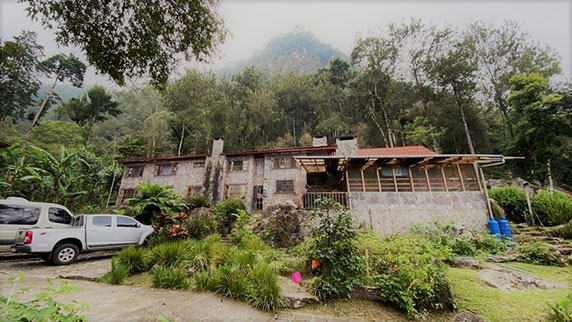
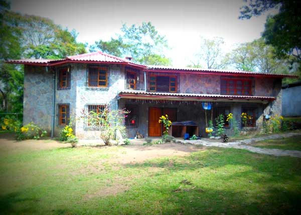
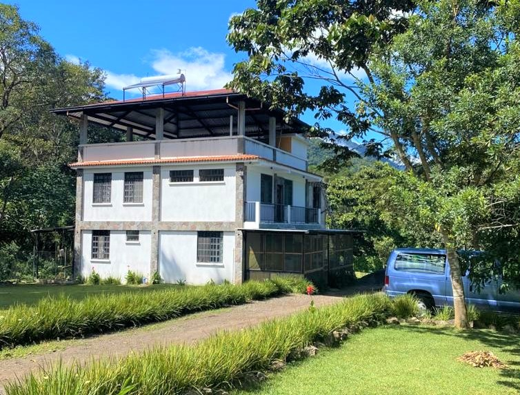
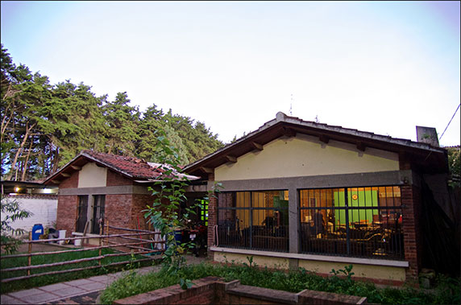
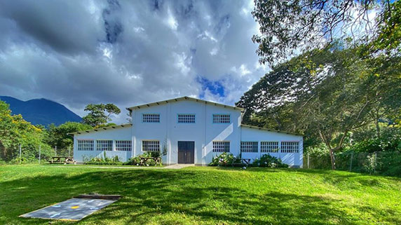

Reichard HouseCasa Reichard
This home is the original Hands of Compassion family house. Many of the children in this home have grown up here and are more of a family. This home generally accepts children 0-8 years old, some exceptions are made. The home can care for up to 30 children. It was moved into in 2006 from the capital city to its current location. Dave and Deborah Reichard are the house parents.
Esta casa es la casa original de la familia Manos de Compasión. Muchos de los niños en esta casa crecieron aquí y son más que todo una familia. Esta casa por general recibe a niños de 0 a 8 años, se hacen algunas acepciones. La casa puede cuidar a hasta 30 niños. Se mudó en 2006 de la ciudad capital hacia su lugar actual. Dave y Deborah Reichard son los padres de la casa.

Ester HouseCasa Ester
This home takes in sexually abused girls ages 11 to 16. Many of the girls come with children or pregnant. There are an overwhelming number of girls that end up in this situation. Most abuse comes from family members. This home can care for up to 15 girls plus their children. This home was started in 2012. Darwin and Yessi Hernandez are the house parents of this house.
Esta casa recibe a niñas abusadas sexualmente entre las edades de 11 a 16 años. Muchas de las niñas llegan con hijos o embarazadas. Hay una enorme cantidad de niñas en esta situación. La mayoría del abuso proviene de miembros de la familia. Esta casa cuida hasta 15 niñas más sus hijos. Este hogar se comenzó en 2012. Darwin and Yessi Hernandez are the house parents of this house.

The Love and Hope HouseLa Casa Amor y Esperanza
This house accepts children 0-6 years of age. We can house 10-15 children here at a time , plus the biological children of the house parents. It was built and donated in 2016 by Dawn Zimmerman and has been used for several programs to help kids and young adults but was designed to be used for the current profile of kids. The current house parents are Hector and Laura Flores.
Esta casa recibe niños de 0 a 6 años. Podemos albergar de 10 a 15 niños a la vez mas los hijos biológicos de los padres de la casa. Fue construida y donada por Dawn Zimmerman en 2016 y se ha usado para diversos programas para ayudar a niños y adolescentes/adultos, pero fue diseñada para las edades ahora aceptadas. Hector y Laura Flores son los padres de esta casa.

The Meshach HouseLa Casa Mesac
In this home we house teen boys ages 12-18 yrs. We keep the number of boys low so as not to create too much chaos. This is one of our smaller houses, but one of the most needed, as there are very few homes that take teen boys. Micah Leire is the house Dad.
En esta casa viven niños adolescentes entre las edades de 12 y 18 años. Se mantiene a pocos adolescentes para no crear mucho chaos. Esta es una de nuestras casas más pequeñas, pero a la vez uno de los más necesitados, ya que hay muy pocos hogares quienes reciben a adolescentes varones. Micah Leier es el padre de la casa.

Manos SchoolColegio Manos
The school provides schooling to all Manos de Compasion’s children. It was started to help provide better education for the children with learning disabilities and special needs. Unfortunately, many of the children accepted into the families of Manos have learning disabilities because of either malnutrition and /or abuse. The school building is also used for group activities, parenting classes and English classes.
El colegio provee educación a todos los niños de Manos de Compasión. Fue fundada para proveer mejor educación a los niños con discapacidades de aprendizaje y necesidades especiales debido a su desnutrición y/o abuso. El edificio del colegio también se usa para actividades en grupo, escuela de Padres y clases de inglés.